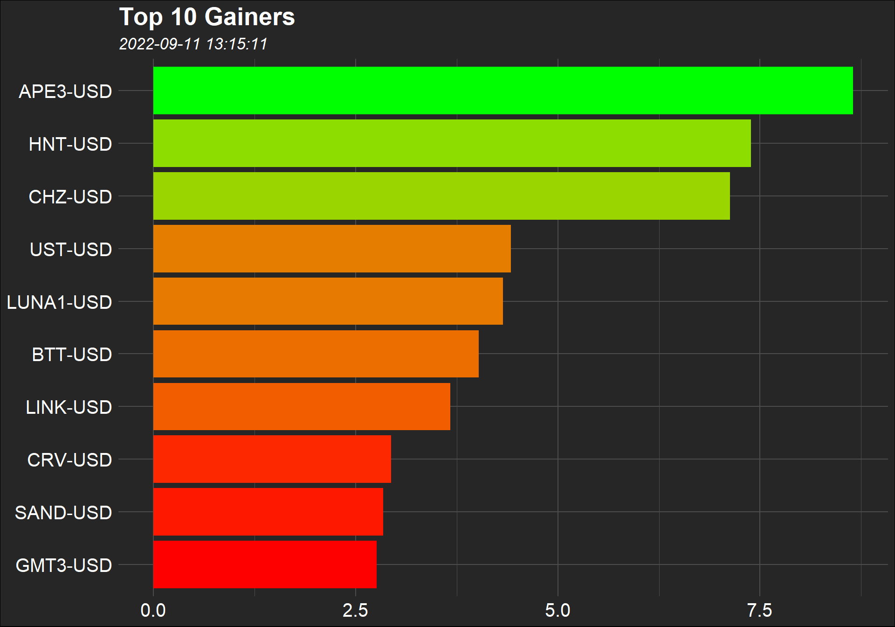

Scheduling a report to run at regular intervals.
In the age of technology we live in, manual processes are extremely time-consuming. Fortunately, there are an increasing number of people who know how to use technology or desire to do so.
In this post, I’ll show you how to run a script at regular intervals. Assume we want to get intraday cryptocurrencies data from Yahoo Finance every 5 minutes using web scraping. The top 100 cryptocurrencies in the table are what we are most interested in.
url <- "https://finance.yahoo.com/cryptocurrencies/?count=100&offset=0"
df <- read_html(url) %>%
html_table() %>%
.[[1]]
The top ten cryptocurrencies in the table are listed below.
| Symbol | Name | Price (Intraday) | Change | % Change | Market Cap | Volume in Currency (Since 0:00 UTC) | Volume in Currency (24Hr) | Total Volume All Currencies (24Hr) | Circulating Supply | 52 Week Range | Day Chart |
|---|---|---|---|---|---|---|---|---|---|---|---|
| BTC-USD | Bitcoin USD | 21,629.88 | 321.140000 | +1.51% | 414.16B | 34.741B | 34.741B | 34.741B | 19.148M | NA | NA |
| ETH-USD | Ethereum USD | 1,761.44 | 41.500000 | +2.41% | 215.468B | 12.414B | 12.414B | 12.414B | 122.325M | NA | NA |
| USDT-USD | Tether USD | 1.0003 | 0.000000 | -0.00% | 67.672B | 48.586B | 48.586B | 48.586B | 67.652B | NA | NA |
| USDC-USD | USD Coin USD | 0.999920 | 0.000095 | +0.01% | 51.676B | 5.498B | 5.498B | 5.498B | 51.68B | NA | NA |
| BNB-USD | BNB USD | 295.43 | 0.860000 | +0.29% | 47.663B | 749.662M | 749.662M | 749.662M | 161.337M | NA | NA |
| BUSD-USD | Binance USD USD | 1.0002 | 0.000100 | +0.01% | 20.007B | 8.959B | 8.959B | 8.959B | 20.003B | NA | NA |
| XRP-USD | XRP USD | 0.354907 | 0.000657 | +0.19% | 17.684B | 626.395M | 626.395M | 626.395M | 49.826B | NA | NA |
| ADA-USD | Cardano USD | 0.514886 | 0.003404 | +0.67% | 17.6B | 767.03M | 767.03M | 767.03M | 34.182B | NA | NA |
| SOL-USD | Solana USD | 34.56 | -0.140000 | -0.40% | 12.209B | 659.81M | 659.81M | 659.81M | 353.284M | NA | NA |
| DOT-USD | Polkadot USD | 7.7056 | -0.024200 | -0.31% | 8.597B | 253.423M | 253.423M | 253.423M | 1.116B | NA | NA |
It’s enough for us to select the Symbol and % Change columns.
I’d like to draw your attention to the fact that the values in the Change column are not numeric format.
str(master)
tibble [100 x 2] (S3: tbl_df/tbl/data.frame)
$ Symbol: chr [1:100] "BTC-USD" "ETH-USD" "USDT-USD" "USDC-USD" ...
$ Change: chr [1:100] "+1.51%" "+2.41%" "-0.00%" "+0.01%" ...We need to remove the plus and percent signs from the column I mentioned and convert the values to numeric format.
master <- master %>%
mutate(
Change = as.numeric(gsub("[^0-9\\.]","",Change))
)
There, it is done!
str(master)
tibble [100 x 2] (S3: tbl_df/tbl/data.frame)
$ Symbol: chr [1:100] "BTC-USD" "ETH-USD" "USDT-USD" "USDC-USD" ...
$ Change: num [1:100] 1.51 2.41 0 0.01 0.29 0.01 0.19 0.67 0.4 0.31 ...Before proceeding, I should point out that we will need to create a new column and get the dates as IDs as well.
And now we can move on to the data visualization step.
gainers <- master %>%
arrange(desc(Change)) %>%
filter(Change > 0) %>%
slice(1:10)
if(nrow(gainers) > 0){
g <- ggplot(gainers, aes(x = reorder(Symbol, Change), y = Change, fill = Change)) +
geom_col() +
coord_flip() +
theme_minimal() +
theme(
plot.background = element_rect(fill = "#262626"),
panel.background = element_blank(),
panel.grid = element_line(color = "#4c4c4c"),
axis.title = element_blank(),
axis.text = element_text(color = "#ffffff", size = 15),
legend.position = "none",
plot.title = element_text(color = "#ffffff", size = 20, face = "bold"),
plot.subtitle = element_text(color = "#ffffff", size = 13, face = "italic")
) +
scale_fill_gradient(low = "red", high = "green") +
labs(title = "Top 10 Gainers",
subtitle = gainers$ID[1])
}
ggsave("g.png")

The following are the codes that we have written thus far.
library(rvest)
library(tidyverse)
url <- "https://finance.yahoo.com/cryptocurrencies/?count=100&offset=0"
df <- read_html(url) %>%
html_table() %>%
.[[1]]
master <- df %>%
select(1,5) %>%
rename("Change"=2) %>%
mutate(
Change = as.numeric(gsub("[^0-9\\.]","",Change)),
ID = Sys.time()
)
gainers <- master %>%
arrange(desc(Change)) %>%
filter(Change > 0) %>%
slice(1:10)
if(nrow(gainers) > 0){
g <- ggplot(gainers, aes(x = reorder(Symbol, Change), y = Change, fill = Change)) +
geom_col() +
coord_flip() +
theme_minimal() +
theme(
plot.background = element_rect(fill = "#262626"),
panel.background = element_blank(),
panel.grid = element_line(color = "#4c4c4c"),
axis.title = element_blank(),
axis.text = element_text(color = "#ffffff", size = 15),
legend.position = "none",
plot.title = element_text(color = "#ffffff", size = 20, face = "bold"),
plot.subtitle = element_text(color = "#ffffff", size = 13, face = "italic")
) +
scale_fill_gradient(low = "red", high = "green") +
labs(title = "Top 10 Gainers",
subtitle = gainers$ID[1])
}
ggsave("g.png")
Writing the data to the database.
SQLite will be used in this study. My reasoning for choosing SQLite is that we will not require any software or server setup. It also has a simple structure. For SQLite, we will use the DBI and RSQLite packages, and the following command will be used to create the database (not temporary; permanent). Wherever the address is, the file path will save the database.
Let’s write the data to the database named cryptoDB. When we do this on a regular basis, say every 5 minutes, we will be careful not to overwrite the table in the database with new data. The append parameter is set to TRUE for this purpose.
dbWriteTable(myDB, "master", master, append = TRUE)
Let’s get the data from the database using SQL.
mastertbl <- dbGetQuery(myDB, "SELECT * FROM master")
| Symbol | Change | ID |
|---|---|---|
| BTC-USD | 1.29 | 1662888193 |
| ETH-USD | 2.46 | 1662888193 |
| USDT-USD | 0.01 | 1662888193 |
| USDC-USD | 0.01 | 1662888193 |
| BNB-USD | 0.04 | 1662888193 |
| BUSD-USD | 0.00 | 1662888193 |
| XRP-USD | 0.17 | 1662888193 |
| ADA-USD | 0.63 | 1662888193 |
| SOL-USD | 0.00 | 1662888193 |
| DOT-USD | 0.20 | 1662888193 |
When the processes are finished, use the code below to exit the database. It will be reconnected with the code that was written at the start (comment line below).
dbDisconnect(myDB)
# myDB <- dbConnect(SQLite(), "cryptoDB.sqlite")
The following are the codes that we have written thus far.
library(DBI)
library(RSQLite)
myDB <- dbConnect(SQLite(), "cryptoDB.sqlite") # "C:/.../cryptoDB.sqlite"
dbWriteTable(myDB, "master", master, append = TRUE)
dbDisconnect(myDB)
Schedule the task scheduler to run the script on a regular basis.
The task scheduler can be configured via the PC or the taskscheduleR package.
taskscheduler_create(
taskname = "Post27",
rscript = "post27.R", # "C:/.../"
schedule = "MINUTE",
starttime = "12:00",
modifier = 5
)
The process has been automated.
What can be done next?
By converting the .R extension to the .Rmd extension, the report can be sent.
E-mail can be used to send outputs with the .R or .Rmd extensions.